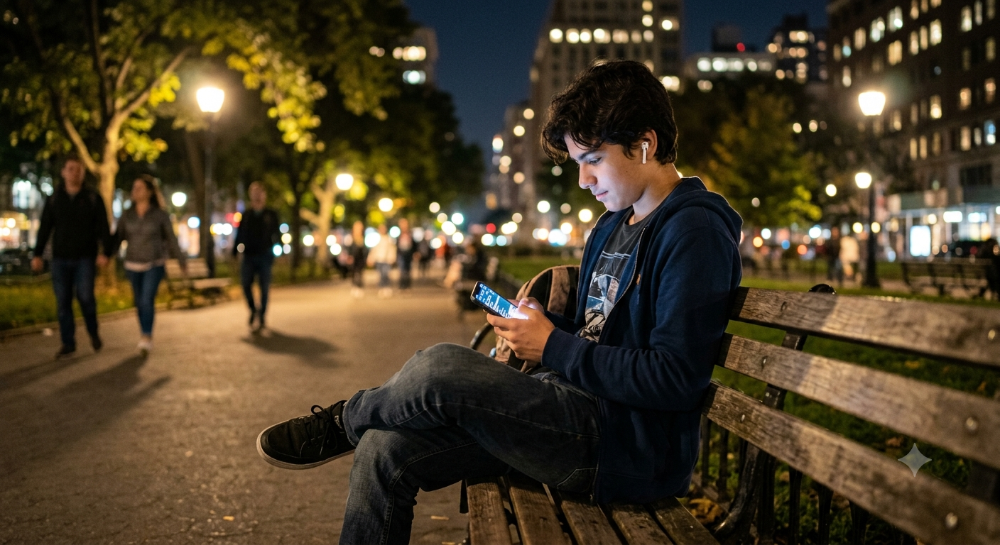

O que é redes sociais.
Olá! seja bem vindo(a), aqui você vai entender como o excesso das redes pode prejudicar a saúde.
Venha entender o que o excesso de redes pode fazer.

Olá! seja bem vindo(a), aqui você vai entender como o excesso das redes pode prejudicar a saúde.
Olá! seja bem vindo(a), aqui você vai entender como o excesso das redes pode prejudicar a saúde.